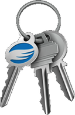

Password databases: from KeePassX to Unix password store
Passwords. We all have a lot of them to remember — most of us have too many. How do you keep track of them all?
Originally I used to just remember passwords for everything, like most people. I soon found this doesn't scale past about 7 passwords and PINs. Rather than use the same passwords everywhere, I started to keep a secret list of passwords, but it was a pain to keep that list with me, and what if it was discovered?
After been keeping my passwords in a GPG-encrypted text file for a few years, I then started using a KeePassX database, and that's been pretty successful. I sync the database to my phone so that I can have my passwords with me whenever needed, but it is a little bit clunky to use.
At the recomendation from someone at work, I checked out pass, “the standard Unix password manager”. It offers all the features I've been using from KeePassX for a few years now, only with much better syncronisation based upon git+ssh.
Pass is also integrated into browsers, editors, and even a few operating systems, so it's potentially a lot less clunky and risky to use than how I was using KeePassX with passwords entered via the system clipboard.
This post reviews my password management approaches to date and gives an overview of Pass.
Passwords are hard
I had progressed past “use the same password everywhere” (dumb!), to “make it something based upon the website's domain” (still easily guessable and dumb), to “use a bookmarklet that crytographically generates the password from the URL and a common passphrase” (uhm?), to “dvorcodes” (passwords with letter substitution based on the dvorak keyboard, still pretty dumb, and has it's own problems requiring me to write an encoder/decoder program in Java).
These were all stop-gap measures. I have 196 actively used personal passwords, I kid you not! I sorted and counted them today. That is why…
I need a password database
I could just pay for a service, but I don't trust any service with my passwords. They are literally the keys to everything! That reminds me: however I store the passwords, it better be encrypted.
I need a password database that I control and is protected with strong cryptography
By about 2009, I had settled on keeping an Org-mode file with passwords listed in it, gpg-encrypted on my PC.
Which was fine.
Except that I needed my PC with Emacs Org and GPG to retrieve my passwords. What if I don't have my PC with emacs and everything when I need a password? Emacs org+gpg was not going to cut it.
I need a password database that I control, protected with strong cryptography and available in my pocket
In 2014 I found out about KeePassX, for which there are several Android apps as well as Windows, Linux and Macintosh database editors.
That's what I've been using for the past 4 years.
But… syncing is hard too
The only trouble with KeePassX is that syncing between a Mac/Windows, Linux and your Mobile phone has limited options (basically, with the KeePassX Android app you can use your own server via SSH/WebDAV/Owncloud, or by Dropbox, or Google Drive). I don't have my own online server. The Dropbox Android client is huge and clunky, plus I don't like Dropbox the company. So I use Google Drive (with read-only access on Suse Linux via KDE's GDrive KIO module).
This was not optimal for Linux, or at work either with a company-restricted GSuite My Drive. I worked around that by sharing a Folder from my personal Google Drive to my work Google account, and storing the share in my work Drive. But now, with Google announcing the imminent death of Google Drive on Windows/Mac, replaced with Drive File Stream — and never supporting Linux at all — I have been casting about for a new solution.
Another issue with KeePassX is that you sync the entire database. It's very easy to mess yourself up:
- Update password A on your Mac
- Add a new password B while you're out on your phone
- Now what? If I sync the phone to the Mac, I lose password A. But if I sync the Mac to the phone, I lose password B. I have to (on a PC/Mac because it's easiest), move the database aside, sync the phone to the Mac, open the new database and copy password B, then open the old database and paste, then move the old database back and finally sync that to the phone. Erk.
The only way to avoid that mess is to always remember to sync before you change anything at either end. But that's not always possible if your phone's got no coverage or you're out of data allowance or you just don't have time….
So this tip from a work colleague about pass is actually very timely!
Why not just sync/share a KeePassX database with git?
Well, I could do that. But again, having all my passwords in one database file — which is opaque to git — means that whenever I add or change a single password, the whole database is updated. It makes resolving conflicts (caused even when changing different passwords on separate computers) pretty much impossible.
Besides, git clients for Android are not a lot better than the DropBox and GoogleDrive apps.
Git works better for passwords when each is in its own file. Managing separate gpg files in a structure by yourself is a pain though. That's where pass comes in.
What is pass?
Pass is a Unix command-line utility to manage passwords, each stored in separate gpg-encrypted text files. It takes care of managing the files, searching, encrypting/decrypting, storing decrypted passwords in your OS clipboard and clearing up after, and moving/renaming/deleting passwords. Pass can generate new passwords, and supports git storange and pushing to/pulling from an online Remote. There are also a lot of third-party tools that can use your password store natively in browsers, desktop apps and mobile phones.
The possibility of having merge conflicts after syncing the password store with git is much less, because each password is in a separate encrypted file. It's only if I update the same password in two places that it could conflict, and then the solution is easy: just keep the newest password (because it's a password — the system that the password is for will always agree with the newest password).
Pass is a “Unix command-line utility” in the traditional “do one thing well” sense. The web site makes a point to call out it's Unix-ness. This is fine on my PCs/Mac because they are Unix systems: I always have one-key access to a Bash prompt.
On my Android I will want a light-weight App, and there is one (well, a pair of apps is needed, but I'll get to that in a later post).
On Windows it might be difficult to install Pass. There is Pass4Win which might work, but it's abandoned by the author. I may be able to get by on Windows just with a phone in my pocket, or I might keep using KeePassX on Windows and manually export/import a subset of passwords between it and Pass. I only use Windows for games these days so that would be acceptable. If ever I do go back to using Windows for work, I'll have to look at that harder. WSL may be an option.
How does a password system using pass work?
There are a few moving parts to this. Here's an overview:
Password Programs
You need the password store utility for Unix, and also for other devices you will be keeping your password store on. Information about each is available from the password store web site.
In addition to the password store program, you need an Open PGP tool. On a Unix machine, Pass uses the GNU Privacy Guard (GPG) tool to encrypt and decrypt files ending in .gpg. The Android app uses Open Key Chain to do the same.
PGP key pair

To encrypt and decrypt the password store, you use a public/secret PGP key pair. I call mine password-store. You will need to place this key pair onto the key ring for each machine that you want to access the password store. The public key is used to encrypt the passwords, and the secret key is used to decrypt them again.
A PGP Public/Secret key pair can have a pass phrase associated with it, and you should use one: this becomes your master password and will be one of the few that you must remember from this point. It should be a strong pass phrase, but not too hard to type in on a mobile smart phone (unless you're happy to use a different pass phrase for the same key pair on the phone, which is also possible).
Password Store
This is your actual collection of passwords, each in it's own OpenPGP-encrypted file. Organise it how you like, as recommended by the pass manual.
Git repository
Your password store can be stored in a local Git repository. This allows you to track changes and retrieve old passwords (I'm unsure why you'd want to get old passwords). But more useful is being able to pass git push and pass git pull between the computer and an online Git Remote on the Internet.
Git Remote
A copy of your password store git repository that's on the Internet. You can store it in any online git repository service such as GitHub, or BitBucket. I prefer to use GitLab.com for this though, because it offers free private repositories.
You may think having a private repo to store encrypted data is redundant, but with a public repo, anybody can clone it to their computer. The only thing protecting your passwords then is the pass phrase for your key pair. It could be cracked by brute force, so better if people can't clone it at all.
SSH Keys
To communicate with the Remote I use the git+ssh protocol, and this requires it's own public/private SSH key pair.
This is separate to the PGP key pair.
You need to generate a key pair on each machine that will connect to the Remote, and then register the public SSH key to the remote. You'll then be able to authenticate against it from that device.
System Clipboard or pinentry program
This is how you can get your password out of pass and into the program that needs the password. Password Store is set to clear the clipboard entry after a set interval (default is 45 seconds), to reduce the chance of you pasting your password into another program. But it does leave the password exposed for all programs which can read the clipboard to see. Better to use a direct interface, if you can, of which a few are available for browsers and text editors.
The next post will describe actually setting this up on a Unix computer.